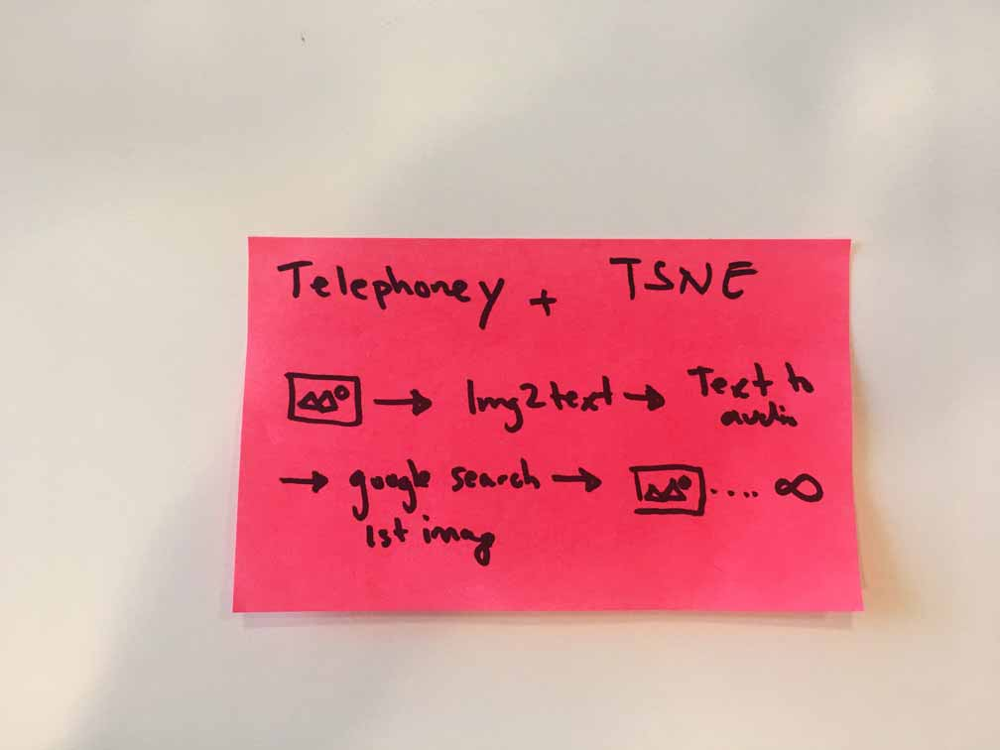
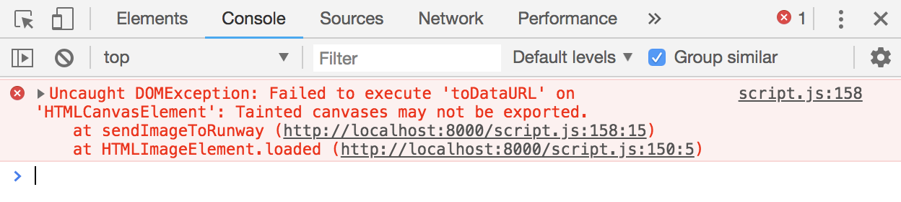

In the summer of 2018, I had the opportunity to take a week-long class in machine learning (ML) with Andreas Refsgaard and Gene Kogan. If you are curious about the Copenhagen Institue of Interaction Design Summer School program, I have written about my experience here. However, if you are curious about the project I made during that week... then this is the HTML file you were looking for. The repository for this project can be found here.
Learning Machine Learning
The goal of my project was to make a thing that could leverage machine learning (yes, it was a rather vague goal, but it was my first time playing around with machine learning so it felt appropriate to give myself room to play). The idea for my project came from two rounds of brainstorming with some friends in the class. Of the 23 ideas that I came up with, Goofy Google (Tele-phoney at the time) seemed like the most fruitful.

fig. 1 Goofy Google in its embryonic form
The basic idea behind Goofy Google was to use the image-to-text model from Runway to generate interesting Google Search queries. Conceptually the project was inspired by Telephone, a common children’s game that does a good job of highlighting the effects of random noise on a system (noisy-channel coding theorem). I figured running images through a machine learning model might, in theory, have the same effect but visually. Turns out it does, and at times it can produce hilarious mistakes.
fig. 2 Diagram showing the flow of data through Goofy Google works
I started to build the machine learning enabled web app on a Wednesday evening. The first big hurdle was setting up a connection between a web page and Runway. Thankfully, Socket.IO came in handy allowing me to send an image from a hosted website to Runway via HTTP. Once Runway processes the image, it returns a JSON string which looks a little something like this:
{
"results": [
{
"caption": "a man eating a donut with sprinkles on it .",
"prob": 0.0008261589057873533
},
{
"caption": "a man is eating a donut with sprinkles .",
"prob": 0.0004849781811583862
},
{
"caption": "a man eating a donut with sprinkles on it",
"prob": 0.0004012762769746773
}
]
}
Though the captions aren’t drastically different, the minor variations will often return different results from a Google search. In my current implementation, I only use the first (most probable) caption, but it might be interesting to have a forking feature. Once I had the caption, I could now send it to the Google Search API which would once again return a JSON string from which I could pull the image corresponding to the caption I had just searched. Up until this point, things had been going smoothly. That changed. On Thursday afternoon, I started getting “Tainted canvas”errors. A tainted canvas error is thrown when foreign images (images not located on your server) are being converted to a URL. This conversion is required for sending an image to Runway.

fig 3. Marilyn Manson may haveTainted Love, but I have tainted canvas.
The Comeback
It was Friday morning, and I still hadn’t figured out my tainted canvas error. I knew it was being caused by images housed on external servers, but I needed a way to get around the error. I tried downloading the images, using blobs, switching file names. Nothing worked.
After much head scratching, the solution was simple and something I should have tried much sooner img.crossOrigin = "anonymous";. This little flag lets the browser know it is okay to use the image even though it is not from the local server. After solving this problem, I caught my first glimpse of Goofy Google in action. It was beyond magical to see a website slowly fill up with images auto-generated through pseudo-intelligence.
fig 4. Final results, an infinte loop of machine learning.
Friday afternoon, at 1:00 PM I presented my project to the students and faculty of CIID. It was well received and I got lots of useful feedback from the professors. My next steps are to deploy the project on a server so that it can run indefinitely. I also would like to make a frame-by-frame animation showing how the search results change over time. For now, I am very happy with the project and I am eager to explore further applications of machine learning.
If you are interested in setting up this project for yourself, let me know. I would be more than happy to share my experience. Feel free to email me :)
Last Edited: Mon. July 15, 2019